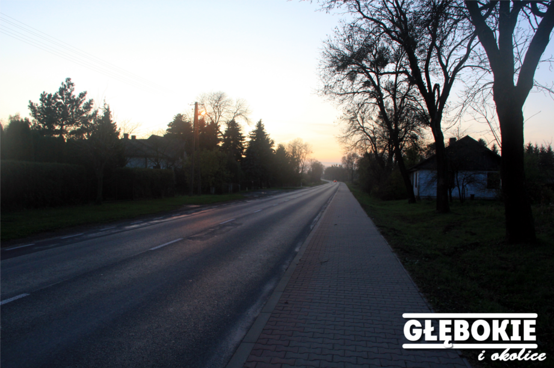
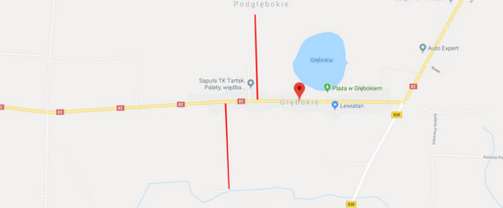

<html> 
<head>
	<title>Nowe drogi w Głębokiem </title>
	<meta http-equiv="Content-Type" content="text/html; charset=UTF-8">
	<link rel="stylesheet" href="style.css" type="text/css" /> 
	<meta name="description" content="Według wójta będą nowe drogi!" />
	<meta name="Keywords" content="Drogi; Głębokie; 2017; Cyców" />
	<script src="http://www.glebokieiokolice.cba.pl/bb_fbslider.js"></script>
</html>

<body>

	<div id="container" />
	<div id="logo" />    </div>
	<div id="nav" /> 
		<div id="main" /> <a href="index.html" /> Strona Główna </a> </div>
		<div id="glebokie" /> <a href="glebokie.html" /> Głębokie </a> </div>
		<div id="gmina" /> <a href="gmina.html" /> Gmina </a> </div>
		<div id="powiat" /> <a href="Powiat.html" /> Powiat </a> </div>
	</div>

	<div id="content" />
	<div /> <div class="half" />  </div> <div class="rhalf" /> <div class="link" /> <a href="nowe-drogi.html" /> Według wójta będą nowe drogi! </a> </div> </br> Według informacji zdobytych u wójta gminy Cyców - <b> Wiesława Pikuły </b> nowe drogi w Głębokiem będą kładzione na początku wiosny (kwiecień-maj). </br> W wakacje przy drodze polnej obok Bark było sypane kruszywo a w listopadzie na drodze obok tartaku. Nowe drogi mają wygladać mniej więcej jak te na ulicy Nowej przy Zajeździe ,,Piotr".    </div> </div>
	<div style="clear:both; margin-top:20px;" /> </div>
	<div/> Na <font color="red" /> <b>  czerwono </b> </font> zaznaczyliśmy gdzie owe drogi najpewniej powstaną. Czekamy z niecierpliwością.  </div> <div> <center>  </center> </div>
	<div " />  </div>
	</div></div></div>


	<div>
</body>


</html>